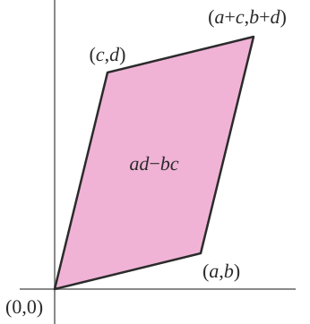

3.3. linear algebra#
3.3.1. linear basics#
3.3.1.1. notation#
\(x \preceq y\) - these are vectors and x is less than y elementwise
\(X \preceq Y\) - matrices, \(Y-X\) is PSD
- \[ \begin{align}\begin{aligned}v^TXv \leq v^TYv \:\: \forall v$$<!-- -->\\### linearity\\- inner product $$<X, Y> = \operatorname{tr}(X^TY) = \sum_i \sum_j X_{ij} Y_{ij}\end{aligned}\end{align} \]
like inner product if we collapsed into big vector
linear
symmetric
gives angle back
linear
superposition \(f(x+y) = f(x)+f(y) \)
proportionality \(f(k\cdot x) = k \cdot f(x)\)
bilinear just means a function is linear in 2 variables
vector space
closed under addition
contains identity
det - sum of products including one element from each row / column with correct sign
absolute value = area of parallelogram made by rows (or cols)

lin independent: \(c_1x_1+c_2x_2=0 \implies c_1=c_2=0\)
cauchy-schwartz inequality: $\(\vert x^T y\vert \leq \vert \vert x\vert \vert _2 \vert \vert y\vert \vert \vert _2\)$
implies triangle inequality: $\(\vert \vert x+y\vert \vert ^2 \leq (\vert \vert x\vert \vert + \vert \vert y\vert \vert )^2\)$
3.3.1.2. matrix properties#
\(x^TAx = \operatorname{tr}(xx^TA)\)
nonsingular = invertible = nonzero determinant = null space of zero
only square matrices
rank of mxn matrix- max number of linearly independent columns / rows
rank==m==n, then nonsingular
ill-conditioned matrix - matrix is close to being singular - very small determinant
inverse
orthogonal matrix: all columns are orthonormal
\(A^{-1} = A^T\)
preserves the Euclidean norm $\(\vert \vert Ax\vert \vert _2 = \vert \vert x\vert \vert _2\)$
if diagonal, inverse is invert all elements
inverting 3x3 - transpose, find all mini dets, multiply by signs, divide by det
psuedo-inverse = Moore-Penrose inverse \(A^\dagger = (A^T A)^{-1} A^T\)
if A is nonsingular, \(A^\dagger = A^{-1}\)
if rank(A) = m, then must invert using \(A A^T\)
if rank(A) = n, then must use \(A^T A\)
inversion of matrix is \(\approx O(n^3)\)
inverse of psd symmetric matrix is also psd and symmetric
if A, B invertible \((AB)^{-1} = B^{-1} A^{-1}\)
orthogonal complement - set of orthogonal vectors
define R(A) to be range space of A (column space) and N(A) to be null space of A
R(A) and N(A) are orthogonal complements
dim \(R(A)\) = r
dim \(N(A)\) = n-r
dim \(R(A^T)\) = r
dim \(N(A^T)\) = m-r
adjoint - compute with mini-dets
\(A^{-1} = adj(A) / \det(A)\)
Schur complement of $\(X = \begin{bmatrix} A & B \\ C & D\end{bmatrix}\)$
\(M/D = A - BD^{-1}C\)
\(M/A = D-CA^{-1}B\)
\(X \succeq 0 \iff M/D \succeq 0\)
3.3.2. matrix calc#
overview: imagine derivative \(f(x + \Delta)\)
function f: \(\text{anything} \to \mathbb{R}^m\)
gradient vector \(\nabla_A f(\mathbf{A})\)- partial derivatives with respect to each element of A (vector or matrix)
gradient = \(\frac{\partial f}{\partial A}^T\)
these next 2 assume numerator layout (numerator-major order, so numerator constant along rows)
function f: \(\mathbb{R}^n \to \mathbb{R}^m\)
Jacobian matrix: $\(\mathbf J = \begin{bmatrix} \dfrac{\partial \mathbf{f}}{\partial x_1} & \cdots & \dfrac{\partial \mathbf{f}}{\partial x_n} \end{bmatrix}= \begin{bmatrix} \dfrac{\partial f_1}{\partial x_1} & \cdots & \dfrac{\partial f_1}{\partial x_n}\\ \vdots & \ddots & \vdots\\ \dfrac{\partial f_m}{\partial x_1} & \cdots & \dfrac{\partial f_m}{\partial x_n} \end{bmatrix}\)$ - this is dim(f) x dim(x)
function f: \(\mathbb{R}^n \to \mathbb{R}\)
2nd derivative is Hessian matrix
- \[\begin{split}\bold H = \nabla^2 f(x)_{ij} = \frac{\partial^2 f(x)}{\partial x_i \partial x_j} = \begin{bmatrix} \dfrac{\partial^2 f}{\partial x_1^2} & \dfrac{\partial^2 f}{\partial x_1\,\partial x_2} & \cdots & \dfrac{\partial^2 f}{\partial x_1\,\partial x_n} \\[2.2ex] \dfrac{\partial^2 f}{\partial x_2\,\partial x_1} & \dfrac{\partial^2 f}{\partial x_2^2} & \cdots & \dfrac{\partial^2 f}{\partial x_2\,\partial x_n} \\[2.2ex] \vdots & \vdots & \ddots & \vdots \\[2.2ex] \dfrac{\partial^2 f}{\partial x_n\,\partial x_1} & \dfrac{\partial^2 f}{\partial x_n\,\partial x_2} & \cdots & \dfrac{\partial^2 f}{\partial x_n^2}\end{bmatrix}$$<!-- --> - examples - $\nabla_x a^T x = a$ - $\nabla_x x^TAx = 2Ax$ (if A symmetric, else $(A+A^T)x)$) - $\nabla_x^2 x^TAx = 2A$ (if A symmetric, else $A+A^T$) - $$\nabla_x \log \: \det X = X^{-1}$$<!-- --> - we can calculate derivs of quadratic forms by calculating derivs of traces - $x^TAx = \operatorname{tr}[x^TAx] = \operatorname{tr}[xx^TA]$ - $\implies \frac{\partial}{\partial A} x^TAx = \frac{\partial}{\partial A} \operatorname{tr}[xx^TA] = [xx^T]^T = xx^T$ - useful result: $$\frac{\partial}{\partial A} \log\vert A\vert = A^{-T}\end{split}\]
3.3.3. norms#
def
nonnegative
definite f(x) = 0 iff x = 0
proportionality (also called homogenous)
triangle inequality
properties
convex
3.3.3.1. vector norms#
\(L_p-\)norms: $\(\vert \vert x\vert \vert _p = (\sum_{i=1}^n \vert x_i\vert ^p)^{1/p}\)$
\(L_0\) norm - number of nonzero elements (this is not actually a norm!)
- \[\vert \vert x\vert \vert _1 = \sum \vert x_i\vert $$<!-- --> - $$\vert \vert x\vert \vert _2$$ - Euclidean norm - $$\vert \vert x\vert \vert _\infty = \max_i \vert x_i\vert $$ - also called *Cheybyshev norm* - *quadratic norms* - *P-quadratic norm*: $$\vert \vert x\vert \vert _P = (x^TPx)^{1/2} = \vert \vert P^{1/2} x \vert \vert _2$$ where $$P \in S_{++}^n\]
dual norm
given a norm $\(\vert \vert \cdot \vert \vert \)\(, dual norm \)\(\vert \vert z\vert \vert _* = \sup\{ z^Tx \: \vert \: \vert \vert x\vert \vert \leq 1\}\)$
dual of the dual is the original
dual of Euclidean is just Euclidean
dual of \(l_1\) is \(l_\infty\)
dual of spectral norm is some of the singular values
3.3.3.2. matrix norms#
schatten p-norms: $\(\vert \vert X\vert \vert _p = (\sum \sigma^p_i(A) )^{1/p}\)$ - note this is nice for organization but this p is never really mentioned
p=1: nuclear norm = trace norm: $\(\vert \vert X\vert \vert _* = \sum_i \sigma_i\)$
p=2: frobenius norm = euclidean norm: $\(\vert \vert X\vert \vert _F^2 = \sqrt {\sum_{ij} X_{ij}^2} = \sqrt{\sum_i \sigma_i^2}\)$
like vector \(L_2\) norm
p=\(\infty\): spectral norm = \(\mathbf{L_2}\)-norm (of a matrix) = $\(\vert \vert X\vert \vert _2 = \sigma_\text{max}(X) \)$
entrywise norms
sum-absolute-value norm (like vector \(l_1\))
maximum-absolute-value norm (like vector \(l_\infty\))
operator norm
let $\(\vert \vert \cdot\vert \vert _a\)\( and \)\(\vert \vert \cdot \vert \vert _b\)$ be vector norms
operator norm $\(\vert \vert X\vert \vert _{a,b} = \sup\{ \vert \vert Xu\vert \vert _a \: \vert \: \vert \vert u\vert \vert _b \leq 1 \}\)$
represents the maximum stretching that X does to a vector u
if using p-norms, can get Frobenius and some others
3.3.4. eigenstuff#
3.3.4.1. eigenvalues intro - Strang 5.1#
elimination changes eigenvalues
eigenvector application to diff eqs \(\frac{du}{dt}=Au\)
soln is exponential: \(u(t) = c_1 e^{\lambda_1 t} x_1 + c_2 e^{\lambda_2 t} x_2\)
eigenvalue eqn: \(Ax = \lambda x \implies (A-\lambda I)x=0\)
\(\det(A-\lambda I) = 0\) yields characteristic polynomial
eigenvalue properties
0 eigenvalue \(\implies\) A is singular
eigenvalues are on the main diagonal when the matrix is triangular
expressions when \(A \in \mathbb{S}\)
\(\det(A) = \prod_i \lambda_i\)
\(\operatorname{tr}(A) = \sum_i \lambda_i\)
- \[ \begin{align}\begin{aligned}\vert \vert A\vert \vert _2 = \max \vert \lambda_i \vert $$<!-- --> - $$\vert \vert A\vert \vert _F = \sqrt{\sum \lambda_i^2}$$<!-- --> - $\lambda_{\max} (A) = \sup_{x \neq 0} \frac{x^T A x}{x^T x}$ - $\lambda_{\min} (A) = \inf_{x \neq 0} \frac{x^T A x}{x^T x}$ - *defective matrices* - lack a full set of eigenvalues - *positive semi-definite*: $A \in R^{nxn}$ - basically these are always *symmetric* $A=A^T$ - all eigenvalues are nonnegative - if $\forall x \in R^n, x^TAx \geq 0$ then A is positive semi definite (PSD) - like it curves up - Note: $x^TAx = \sum_{i, j} x_iA_{i, j} x_j$ - if $\forall x \in R^n, x^TAx > 0$ then A is positive definite (PD) - PD $\to$ full rank, invertible - PSD + symmetric $\implies$ can be written as *Gram matrix* $G = X^T X $ - if X full rank, then $G$ is PD - PSD notation - $S^n$ - set of symmetric matrices - $S^n_+$ - set of PSD matrices - $S^n_{++}$ - set of PD matrices\\### Strang 5.2 - diagonalization\\- *diagonalization* = *eigenvalue decomposition* = *spectral decomposition* - assume A (nxn) is symmetric - $A = \cblue{Q} \corange{\Lambda} \cblue{Q^T}$ - <span class="cblue">Q := eigenvectors as columns</span>, Q is orthonormal - <span class="corange">$\Lambda$ := eigenvalues on diagonal</span> - only diagonalizable if n independent eigenvectors - not related to invertibility - eigenvectors corresponding to different eigenvalues are lin. independent - other Q matrices won't produce diagonal - there are always n complex eigenvalues - orthogonal matrix $Q^TQ=I$ - examples - if X, Y symmetric, $\operatorname{tr}(YX) = \operatorname{tr}(Y \sum \lambda_i q_i q_i^T)$ - lets us easily calculate $A^2$, $\sqrt{A}$ - eigenvalues of $A^2$ are squared, eigenvectors remain same - eigenvalues of $A^{-1}$ are inverse eigenvalues - eigenvalue of rotation matrix is $i$ - eigenvalues for $AB$ only multiply when A and B share eigenvectors - diagonalizable matrices *share the same eigenvector* matrix S iff $AB = BA$ - *generalized eigenvalue decomposition* - for 2 symmetric matrices - $A = V \Lambda V^T$, $B=VV^T$\\### Strang 6.3 - singular value decomposition\\- SVD for any nxp matrix: $X=\cblue{U} \corange{\Sigma} \cgreen{V^T}$ - <span class="cblue">U columns</span> (nxn) are eigenvectors of $XX^T$ - <span class="cgreen">columns of V</span> (pxp) are eigenvectors of $X^TX$ - r <span class="corange">singular values</span> on diagonal of $\corange{\Sigma}$ (nxp) - square roots of nonzero eigenvalues of both $XX^T$ and $X^TX$ - like <span class="cgreen">rotating</span>, <span class="corange">scaling</span>, and <span class="cblue">rotating back</span> - SVD ex. $A=UDV^T \implies A^{-1} = VD^{-1} U^T$ - $X = \sum_i \sigma_i u_i v_i^T$ - properties 1. for PD matrices, $\Sigma=\Lambda$, $U\Sigma V^T = Q \Lambda Q^T$ - for other symmetric matrices, any negative eigenvalues in $\Lambda$ become positive in $\Sigma$ - applications - very numerically stable because U and V are orthogonal matrices - *condition number* of invertible nxn matrix = $\sigma_{\max} / \sigma_{\min}$ - $$A=\cblue{U}\corange{\Sigma} \cgreen{V^T} = \cblue{u_1} \corange{\sigma_1} \cgreen{v_1^T} + ... + \cblue{u_r} \corange{\sigma_r} \cgreen{v_r^T}$$<!-- --> - we can throw away columns corresponding to small $\corange{\sigma_i}$ - pseudoinverse $A^+ = V \Sigma^+ U^T$\\### Strang 5.3 - difference eqs and power $A^k$\\- compound interest - solving for fibonacci numbers - Markov matrices - steady-state Ax = x - corresponds to $\lambda = 1$ - stability of $u_{k+1} = A u_k$ - stable if all eigenvalues satisfy $$\vert \lambda_i\vert $$ <1 - neutrally stable if some $$\vert \lambda_i\vert =1\end{aligned}\end{align} \]
unstable if at least one $\(\vert \lambda_i\vert \)$ > 1
Leontief’s input-output matrix
Perron-Frobenius thm - if A is a positive matrix (positive values), so is its largest eigenvalue and every component of the corresponding eigenvector is also positive
useful for ranking, etc.
power method: want to find eigenvector \(v\) corresponding to largest eigenvalue
$\(v = \underset{n \to \infty}{\lim} \frac{A^n v_0}{\vert A^nv_0\vert }\)\( where \)v_0$ is nonnegative